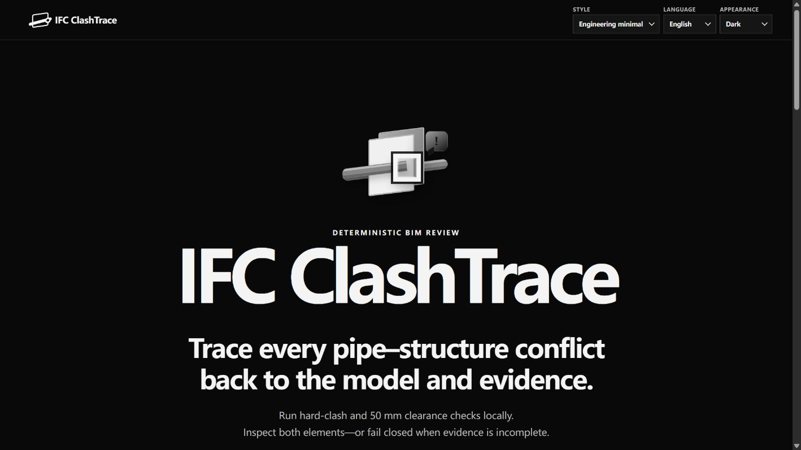

SEPARATE THE FACT FROM THE EXPLANATION
The machine record stays authoritative. Optional AI receives a minimal preview only after fresh consent—and it cannot rewrite the result.
Review the deterministic evidence first. Use the explanation to navigate attention—not to change the conclusion.